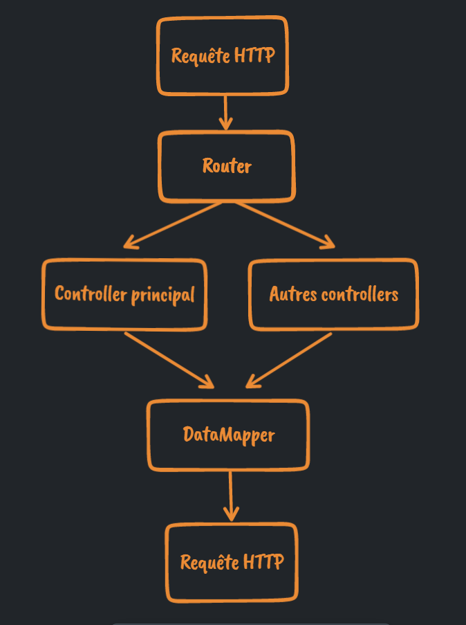

OLDUVAÏ
Saison 4 : approfondissement des notions de backend !
Cette saison va être intense, avec enormément de nouvelles notions. On
commence par le côté utilisateur, les User Story, qui font partie des
méthodes agiles (objectifs à court terme donnat des résultats concrets
rapides). Les user story visent à s'assurer que l'on délivre les
bonnes fonctionnalités aux utilisateurs.
On met ensuite en place des controllers, qui respectent le SoC (séparation des concepts) et d'avoir un code plus lisible, mieux organisé. Les routers qui gèrent la partie du code qui gérant les pages affichées en fonction des URL ne font plus que ça, et les controllers gèrent le code lié à cette URL.
On "découvre" ensuite le langage SQL, qui permet de communiquer avec les bases de données et d'en extraire les informations souhaitées. Ayant travaillé plusieurs années sur Access, je me remets vite dans le bain sur ce langage que j'aime bien.
On met aussi en place des DataMapper qui gèrent la requêtes SQL vers les bases de données. Les DataMapper permettent aussi de suivre le SoC, et de ne laisser dans les controller que le code gérant la page. Les requêtes SQL et leur gestion seront donc séparées dans les méthode du DataMapper. Les "promesses", encore une nouvelle notion, permettent d'attendre le retour/la réponse de cette requête SQL avant d'exécuter la suite du code.
Nous découvrons aussi les Cookies et la gestion des sessions utilisateurs, notion très importante pour garder en mémoire les préférences des utilisateurs, les paniers sur les site d'e-commerce etc...
C'est une saison très intense intellectuellement, assez fatiguante. J'ai du m'employer à fond mais le parcours de fin de saison se passe finalement très bien.